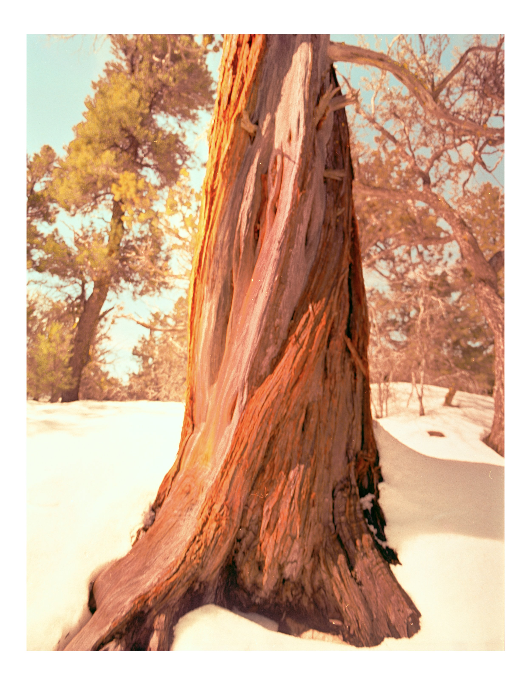
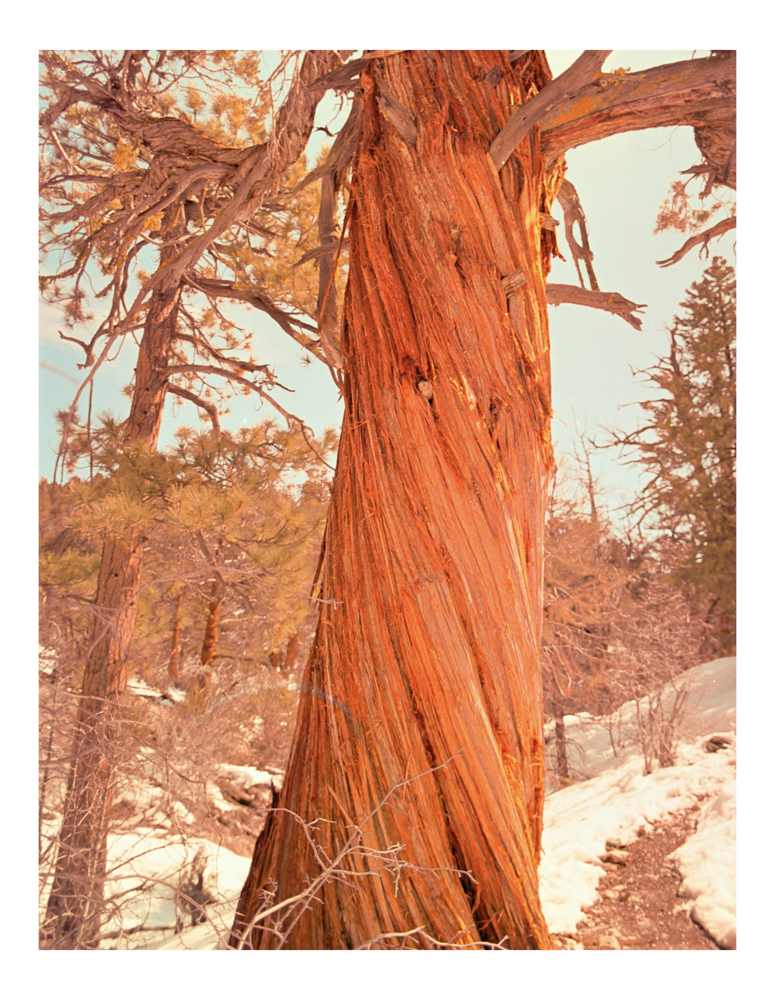
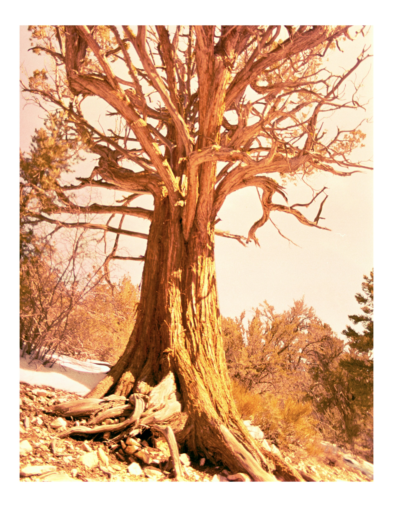

Collection 01
Warmth in passing.
A study of saturated color, small gestures, and the kind of light that makes an ordinary moment feel briefly permanent.




Collection 01
A study of saturated color, small gestures, and the kind of light that makes an ordinary moment feel briefly permanent.


